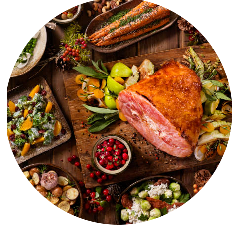

Jantar

Refeições fartas para desfrutar com a família e amigos.
Internacional

Explore sabores do mundo com pratos de diversas culturas.
Datas Especiais
Receitas temáticas para celebrar momentos especiais.
Frutos do Mar
Pratos com peixes, camarões, mariscos e receitas do litoral
Comida Vegana
100% à base de plantas, sem ingredientes de origem animal.
Petiscos e Entradas

Aperitivos, pratos frios, porções e receitas rápidas.
Fit e Saudável
Pratos low carb, vegetarianos e opções para manter a dieta.
Caldos e Sopas
Receitas quentes e reconfortantes para dias frios.
Massas e Pizzas
Pizzas, macarrão, lasanhas e receitas italianas clássicas.
Doces e Sobremesas
Bolos, tortas, brigadeiros e delícias para adoçar o dia.
Lanches e Fast Food
Opções rápidas para o dia a dia
Bebidas e Drinks
Sucos, coquetéis, shakes e receitas de bebidas criativas.